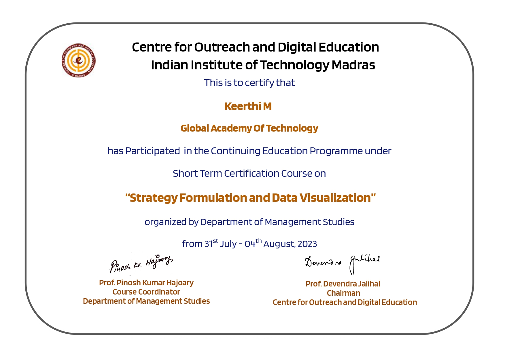
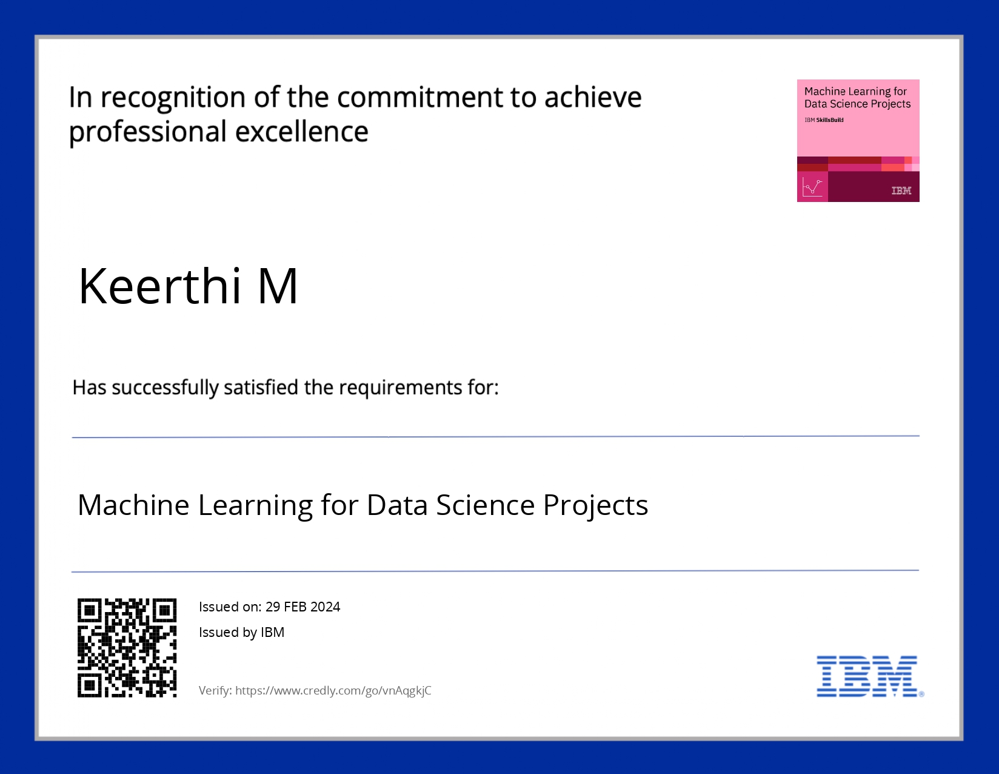
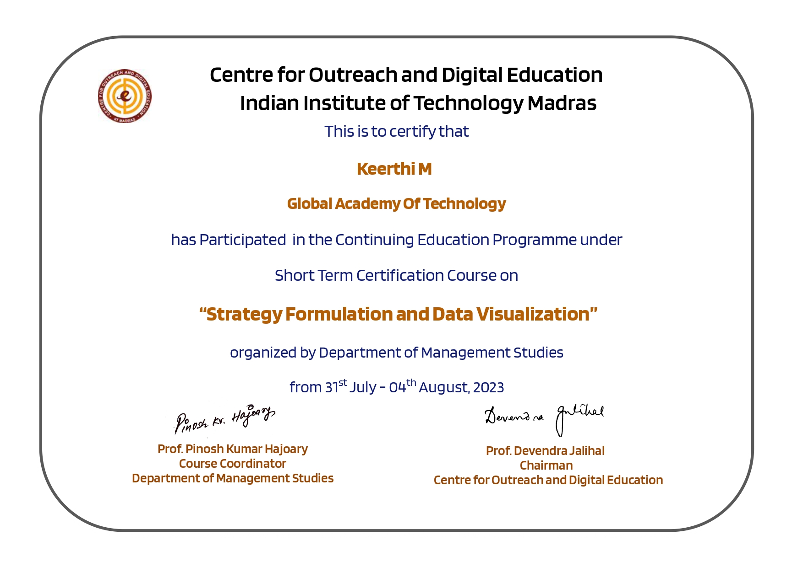
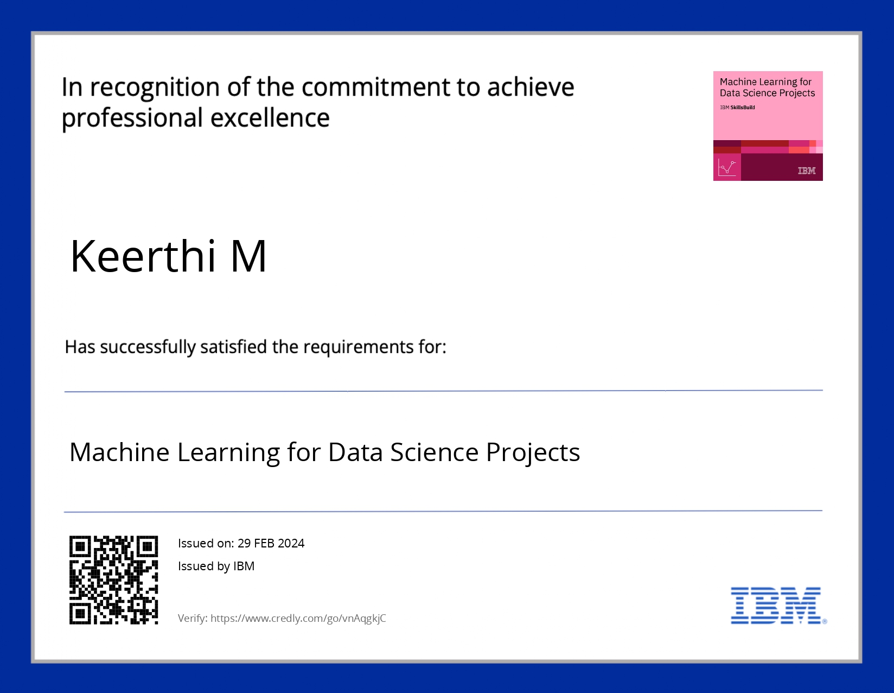

Hello, I'm Keerthi
Welcome to my personal website! Here you can explore my achievements, interests,journey and academic milestones.
Welcome to my personal website! Here you can explore my achievements, interests,journey and academic milestones.
Hello! I am a passionate and dedicated individual with a strong interest in technology and continuous learning. I enjoy tackling challenges and coming up with creative solutions in various domains including web development, data science and analysis. Beyond the technical realm, I value teamwork, discipline, and balance in life. I strive to grow both professionally and personally through diverse experiences and opportunities.


.jpg) 




Developed a ranking system for restaurants by combining multi-criteria decision-making techniques like Fuzzy AHP, TOPSIS, and sentiment evaluation.

Built a site that converts user input text into speech output using browser-based JavaScript APIs for text-to-speech synthesis.

Transgender individuals face significant physical and mental health challenges, especially around gender affirmation surgeries. Yet, there's a gap in personalized post-surgery risk prediction and accessible mental health support. Predicting gender affirmation surgery risk and providing mental health support using a chatbot assistant.